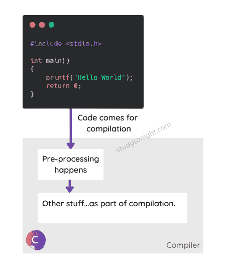
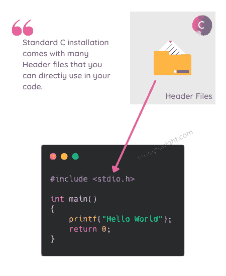

第一个 C 程序及其结构
在本教程中，我们将学习创建第一个 C 程序，然后了解它的结构。首先来看看如何用 C 语言编写一个简单的和最基础的 Hello World 程序。我们开始吧。
这是用 C 语言打印“你好世界”的程序。
#include <stdio.h>
int main()
{
printf("Hello World");
return 0;
}
你好，世界
要在本地计算机上运行上述代码，您必须在计算机/笔记本电脑上安装一个 C 语言编译器。我们将在下一个教程中学习如何做到这一点- 编译并运行 C 代码。
如果你不想在你的计算机上安装 C 编译器，不要担心。你可以使用我们的在线编译器运行 C 程序并练习。点击上面的运行程序按钮打开编译器。
理解 C 程序的结构
下面给出了 C 程序的一些不同部分:
预处理器
头文件
main() 功能
所有这些都是 C 语言程序必不可少的部分。不要担心这一切，我们会一件一件地了解一切，也会清除你所有的困惑。
让我们从介绍我们在上面的 Hello World 程序中使用的各种代码语句开始。
1.预处理器
#include是任何 C 程序的第一个语句。它被称为预处理器。预处理器的任务是初始化程序的环境，即把程序和所需的头文件联系起来。
顾名思义，这一行代码是负责做预处理，在实际代码(逻辑)执行之前。

所以，当我们说#include<stdio.h>的时候，是通知编译器在执行程序之前把 stdio.h 头文件也就是标准 I/O 库包含到程序中。
标准 I/O 库让你从键盘读取输入(即标准输入)，然后将输出写入控制台屏幕(即标准输出)，这是一个非常有用的库。
这里所说的控制台屏幕，是指 Windows 操作系统下的 CMD 或命令提示符，使用 Linux/Ubuntu/macOS 下的终端。
同样，我们可以包含任意数量的头文件。
#include不是唯一的预处理器。每当你看到任何一段以#符号开头的代码，这意味着它是一个 C 语言的预处理器。稍后我们将详细了解预处理器。
2.头文件
一个头文件是一组内置(现成)功能的集合，我们可以在程序中直接使用。
头文件包含函数的定义，可以通过使用预处理器#include语句和头文件的名称在任何 C 程序中使用。
有一些标准的头文件伴随着默认的 C 安装，比如 stdio.h 头文件。还有很多其他这样的文件，我们稍后会了解它们。
随着时间的推移，你会对头文件有一个清晰的了解，现在把它们看作是 C 语言打包的现成函数集合，你可以使用它们而不用担心它们是如何工作的，你所要做的就是把头文件包含在你的程序中。

要使用任何标准库函数，必须包含适当的头文件。这是在 C 源代码的开头完成的。
例如，在 C 程序中使用printf()函数，该函数用于在控制台屏幕上显示任何东西，则需要行#include <stdio.h>，因为头文件 stdio.h 包含printf()函数定义。
所有头文件都会有。h 分机。
3.main()功能
main()功能是每个 C 程序都必须有的功能。
C 程序中该函数内部的所有内容都将被执行，因此实际的逻辑或代码总是写在main()函数内部。
顾名思义，这是主(的首要或吸引中心)功能。
#include <stdio.h>
int main()
{
printf("Hello World");
return 0;
}
在上面的 Hello World 代码示例中，main()函数之前写了int，还记得吗？嗯，这就是main()功能的返回类型。我们稍后将详细讨论它。
main()函数后面的花括号{ }包含了main()函数的体。
我们将在即将到来的教程中学习 C 语言中的函数是什么。
4.printf()功能
printf()是一个用于在控制台上打印(显示)任何内容作为输出的功能。这个函数是在 stdio.h 头文件中定义的，我们已经把它包含在我们的 C 程序中了。
我们将在下一个教程中介绍如何获取输入和显示输出。
5.返回语句
return语句用于返回对调用者函数的响应。它通常是任何 C 语言函数的最后一条语句。不要担心这一点，当我们学习 C 语言中的函数时，我们将讨论这一陈述。
6.分号
需要注意的是，C 中的每个语句都应该以分号(；)。如果您错过添加任何分号，编译器将给出一个错误。
如何在我的电脑上写 C 程序？
所有的 C 程序都可以在记事本或记事本++ 等普通文本编辑器中编写和编辑，必须用文件名和保存。c 延长。例如， helloworld.c 可以是 helloworld 程序的文件名。
如果不添加扩展名。c 那么编译器不会将其识别为 C 语言程序文件。
常见问题解答
1.说出 C 语言编程中不同的预处理程序？
C 语言中不同的预处理程序有#include、#if、#define、#ifdef、#undef等。还有更多。预处理器是在执行 C 程序的主代码之前执行的语句。
2.C 语言中的 main()函数能理解什么？
C 语言中的main()函数充当任何程序的入口点，或者我们可以说代码的执行从这里开始。执行main()函数内部的源代码。
3.如何给 C 程序添加注释？
要添加单行注释，可以在注释后面使用斜线**//**，对于多行注释，可以使用如下: /此处注释/ 。
4.C 程序中的 stdio.h 是什么？
stdio 代表标准输入输出和。h 是文件的扩展名，表示是头文件。
这个头文件的主要用途是，它有助于从用户(键盘)获得输入，并将输出结果文本返回给监视器(屏幕)。这个头文件中有我们可以在程序中使用的现成函数，例如printf()和scanf()函数在 stdio.h 头文件中定义。
结论
在本教程中，我们看到了一个简单的 C 语言 Hello World 程序，并介绍了它的结构。在下一个教程中，我们将在本地计算机/笔记本电脑上设置 C 编译器，这样您也可以在您的计算机上运行该程序。